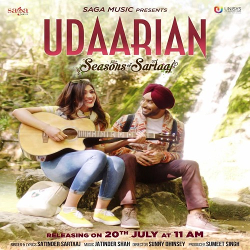
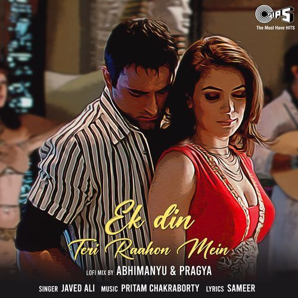

soundtrack of you ✦
songs
that
feel
like
you
Some songs don’t just play — they quietly stay inside memories, rainy nights, metro rides, soft conversations and somehow start sounding like you.


Udaariyan ✨
soft midnight emotions

Ek Din Teri Raahon Mein 💫
romantic nostalgia
Udaariyan feels like quiet love wrapped inside memories.